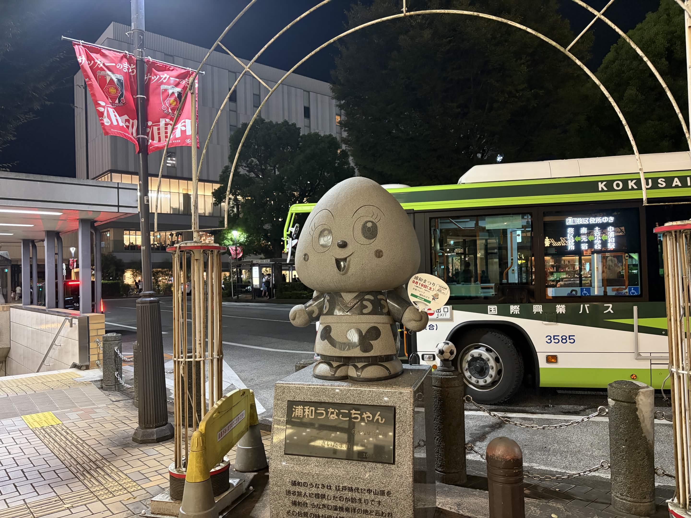

かつて見沼田んぼをはじめとする湿地が広がっていた浦和。江戸時代から続くうなぎ文化を今に伝えます。
浦和の周辺にはかつて見沼(みぬま)をはじめとする広大な沼地や湿田が広がり、 良質なうなぎが豊富に獲れる土地でした。江戸時代、中山道の宿場町として 多くの旅人が行き交う中で、精のつく料理としてうなぎ料理が名物になったと 伝えられています。以来、浦和では蒲焼専門の老舗が代々受け継がれ、 今もなお「うなぎの街」としての誇りを大切にしています。
見沼田んぼをはじめとした低湿地が広がり、良質なうなぎが数多く獲れる土地として知られるようになりました。
中山道浦和宿を行き交う旅人をもてなす料理として、うなぎの蒲焼が定着。滋養強壮の食として親しまれました。
見沼の干拓が進んだ後も、浦和では代々続く老舗のうなぎ専門店がその技と味を守り続けています。
地域を挙げてうなぎ文化を発信するイベントも開催され、浦和ならではの食文化として今も愛され続けています。
秘伝のタレと炭火焼きにこだわる老舗店が点在。香ばしい香りとふっくらとした身の食感を、まずは「うな重」で堪能してみてください。
うなぎの肝を使った肝吸いや、だし巻き卵でうなぎを巻いた「う巻き」など、一皿ごとに職人の技が光る一品料理も見逃せません。
土用の丑の日はもちろん、旬の時期によって脂の乗りも変化。季節を変えて訪れることで、また違った味わいに出会えます。
多くの店で真空パックの持ち帰り用蒲焼を用意。浦和みやげとして、大切な人への贈り物にもぴったりです。
私自身、さいたま市立高砂小学校の卒業前には、毎年給食でうな重が出ていました。 また、小学3年生の頃には授業でうなぎについて学ぶ時間もあり、子どもの頃から 「浦和といえばうなぎ」というイメージが強くありました。
老舗の並ぶ通りから公園まで、浦和の街をゆったり散策してみましょう。